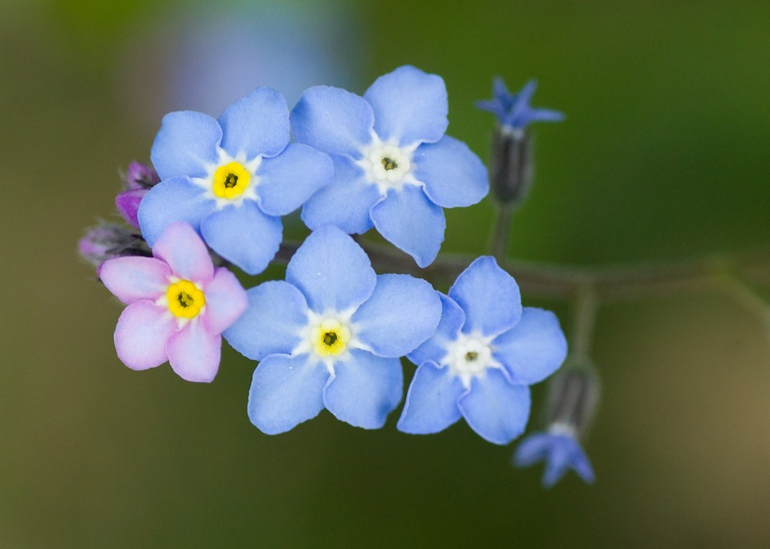
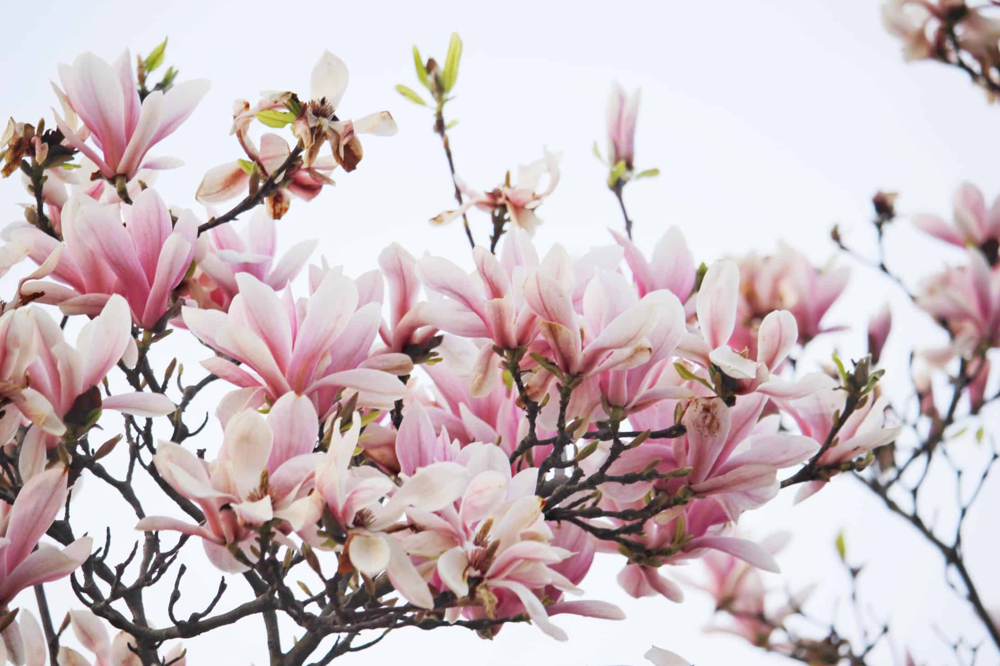
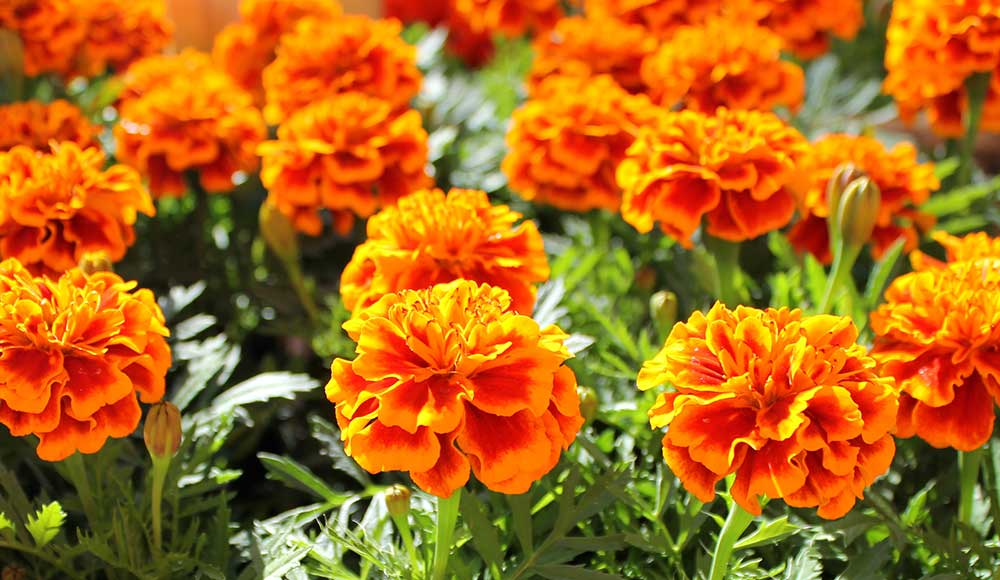

Flowa

Myosotis is a genus of flowering plants in the family Boraginaceae. The name comes from the Ancient Greek μυοσωτίς "mouse's ear", which the foliage is thought to resemble.
In the northern hemisphere they are colloquially denominated "forget-me-nots" or scorpion grasses. The colloquial name "forget-me-not" was calqued from the German Vergissmeinnicht and first used in English in AD 1398 through King Henry IV of England.
Similar names and variations are found in many languages. Myosotis alpestris is the official flower of Alaska and Dalsland, Sweden. Plants of the genus are commonly confused with Chatham Islands' forget-me-nots which belong to the related genus Myosotidium.
Myosotis species have pentamerous actinomorphic flowers with 5 sepals and petals. Flowers are typically 1 cm in diameter or less; flatly faced; coloured blue, pink, white or yellow with yellow centres; and born on scorpioid cymes.
They typically flower in spring or soon after the melting of snow in alpine ecosystems. They are annual or perennial. The foliage is alternate, and their roots are generally diffuse.
In the language of flowers, Myosotis represents hope, remembrance, true and undying love. "Forget-me-nots" symbolize true love and respect. When you give someone these tiny blooms, it represents a promise that you will always remember them and will keep them in your thoughts.

Magnolia is a large genus of about 210 flowering plant species in the subfamily Magnolioideae of the family Magnoliaceae. It is named after French botanist Pierre Magnol.
Magnolia is an ancient genus. Appearing before bees evolved, the flowers are theorized to have evolved to encourage pollination by beetles.
To avoid damage from pollinating beetles, the carpels of Magnolia flowers are extremely tough.Fossilized specimens of M. acuminata have been found dating to 20 million years ago, and of plants identifiably belonging to the Magnoliaceae date to 95 million years ago.
Another aspect of Magnolia considered to represent an ancestral state is that the flower bud is enclosed in a bract rather than in sepals; the perianth parts are undifferentiated and called tepals rather than distinct sepals and petals.
Magnolia shares the tepal characteristic with several other flowering plants near the base of the flowering plant lineage such as
Amborella and
Nymphaea
(as well as with many more recently derived plants such as
Lilium).
The Magnolia flower meaning is attached with the symbols of nobility, perseverance, and love of nature. Soft and subtle in color yet strong in appearance, the flower is representative of the beauty encompassing femininity and gentleness. Often men prefer to gift their female partner the magnolia flowers, as an appreciation of their beauty.

Tagetes is a genus of annual or perennial, mostly herbaceous plants in the sunflower family Asteraceae. They are among several groups of plants known in English as Marigolds. The genus Tagetes was described by Carl Linnaeus in 1753.
The plants are native to the Americas, growing naturally from the southwestern United States into South America, but some species have become naturalized around the world. One species, T. minuta, is considered a noxious invasive plant in some areas.
Tagetes species vary in size from 0.1 to 2.2 m tall. Most species have pinnate green leaves. Blooms naturally occur in golden, orange, yellow, and white colors, often with maroon highlights. Floral heads are typically (1-) to 4–6 cm diameter, generally with both ray florets and disc florets.
In horticulture, they tend to be planted as annuals, although the perennial species are gaining popularity. They have fibrous roots.
Marigolds were often linked to the powerful strength of the sun and represent power, strength, and light that lives inside of a person. The marigold has also come to symbolize a feeling of despaired love. If someone has lost someone they love, whether it be by death or a broken relationship.